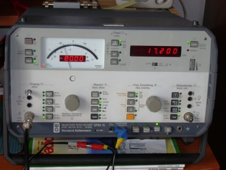
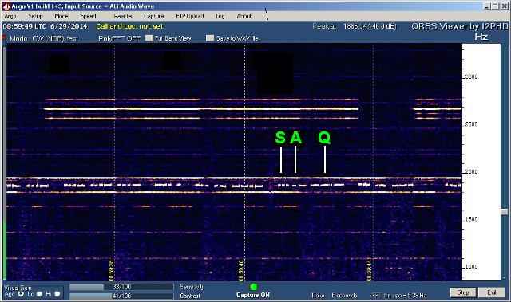

Stavolta di chimica non c'è niente di niente, l'argomento è solo radioricezione; il breve testo che segue è, diciamo così, dedicato a qualche appassionato che per puro caso passasse da queste parti.
Nel post n.270 (17 marzo) avevo presentato una antenna a telaio per le VLF, ovvero dedicata alla ricezione delle onde lunghissime.
In particolar modo si pensava di testarla il 29 giugno, in occasione della brevissima messa in funzione annuale di quello storico trasmettitore svedese di Grimeton (ved. post n.269).
Ora la data è arrivata e con l'amico Silverio (in foto vicino all'antenna) armati di positive speranze ci siamo accinti alla prova.
E' utile fare una sorta di analogia, tanto per capire.
Ricevere Grimeton NON è solo un esercizio di radioricezione verso una stazione difficile, come ce ne sono tantissime: ricevere la SAQ è come recarsi ad un safari fotografico e riprendere l'unico DINOSAURO ancora vivo e vegeto...
Per chi volesse approfondire, Link1 e Link2.
La frequenza di ricezione è 17,2 KHz, corrispondente ad una lunghezza d'onda di 17,442 chilometri (chilometri, non metri... se non fosse radiofrequenza saremmo quasi in banda audio!).
Il nominativo della stazione è SAQ ed il modo di emissione CW, ovvero portante telegrafica non modulata.
La propagazione è per onda di terra senza riflessioni ionosferiche, con notevolissima attenuazione dalla Svezia.
Il setup di ricezione consisteva in un voltmetro selettivo Wandel&Golterman SPM-15, nel software Argo e nell'antenna loop sintonizzabile citata.
L'emissione della SAQ partiva alle ore 08:30 UTC e durava mezz'ora, in concomitanza con l'evento del decennale dell'acquisizione dello status di Patrimonio dell'Umanità dell'UNESCO da parte della stazione stessa.
La prova di ricezione ha avuto pieno successo, confermando l'efficienza dell'antenna e la sensibilità dell'SPM-15.
Il segnale era fortissimo (e qui devo ricordare che tutto è relativo...!) e perfettamente intelleggibile nella serie di punti e linee del vecchio Morse.
Lo spettrogramma di Argo, poco nitido, non fa onore alla perfetta ricezione ad orecchio, ma pur con qualche difficoltà si riescono a vedere (più verso destra) i tre punti della S, il punto-linea della A e le due linee-punto-linea della Q.
Una bella esperienza, decisamente istruttiva per gli appassionati anche di queste cose.

Silverio è pronto alla ricezione...

L'SPM-15 è sintonizzato...

Lo spettrogramma Argo è poco nitido ma accettabile...